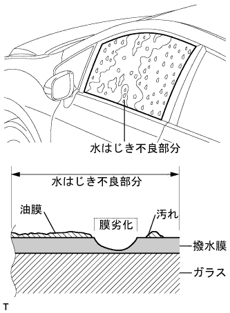
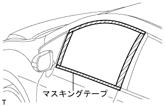
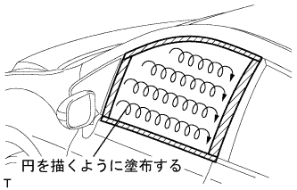

Water-repellent Door Glass Adjustment |
| 1. Inspect Water Repellent Door Glass |
 |
Spray water on the door glass to wash off mud and dirt.
After spraying water on the door glass with a car wash hose or equivalent, check that water is repelled over the entire surface of the door glass and forms small beads.
| 2. Adjust Water Repellent Door Glass |
Cleaning
Spray water on the door glass and clean mud and dirt from the glass surface and surrounding weatherstrip with a shop rag.
Remove moisture with a shop rag or by air blowing.
 |
Masking
Protect the weatherstrip with masking tape.
Oil Film Removal
Shake the oil film remover to mix it thoroughly.
Apply oil film remover to a shop rag moistened with a small amount of water and polish the glass surface lightly.
Spray water on the door glass and wash off the oil film remover with a shop rag.
Thoroughly remove moisture with a shop rag or by air blowing.
 |
Coating Agent Application
Check that the glass surface is dry.
Apply a small amount of coating agent to a dry shop rag or tissue paper and apply it in a circular motion.
Leave it for 2 minutes or more, and apply again in the same way.
Finishing Agent Application
Apply a small amount of finishing agent to a dry shop rag or tissue paper and apply it to the glass surface. Also wipe off any areas where the coating agent remains white with the finishing agent.
After it dries, spray water on the door glass and check the water repellent effect.
Remove the masking tape and wash the weatherstrip with water.